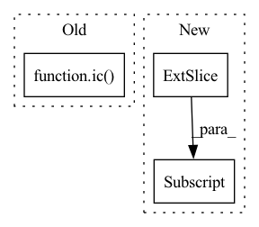

Pattern ID :1273

Before Change
sim_matrix = sim_matrix / torch.einsum("i,ju->iju", z1_abs, z2_abs)
sim_matrix = torch.exp(sim_matrix / self.tau) // [batch_size, batch_size, num_conformers]
ic(sim_matrix.shape)
pos_sim = torch.diagonal(sim_matrix) // [batch_size, num_conformers]
ic(pos_sim.shape)
loss = pos_sim / (sim_matrix.sum(dim=1) - pos_sim)
loss = - torch.log(loss).mean()
After Change
sim_matrix = sim_matrix / torch.einsum("i,ju->iju", z1_abs, z2_abs)
sim_matrix = torch.exp(sim_matrix / self.tau) // [batch_size, batch_size, num_conformers]
pos_sim = sim_matrix[range(batch_size), range(batch_size), :] // [batch_size, num_conformers]
loss = pos_sim / (sim_matrix.sum(dim=1) - pos_sim)
loss = - torch.log(loss).mean()
In pattern: SUPERPATTERN
Frequency: 3
Non-data size: 3
Instances
Fragment ID: 6322800
Project Name: hannesstark/3dinfomax
Commit Name: 4232b957c17cfd67f1066a1400c440a67e21b427
Time: 2021-06-24
Author: hannes.staerk@gmail.com
File Name: commons/losses.py
M Class Name: NTXentMultiplePositivesV3
N Class Name: NTXentMultiplePositivesV3
M Method Name: forward(3)
N Method Name: forward(3)
M Parent Class: _Loss
N Parent Class: _Loss
M File Name: commons/losses.py
N File Name: commons/losses.py
M Start Line: 274
M End Line: 277
N Start Line: 274
N End Line: 275
'>
Before Change
def forward(self, h, pos_enc, mask):
batch_size, max_num_atoms, _ = h.size()
ic(pos_enc.shape)
h = self.atom_encoder(h.view(-1, h.shape[-1])) // [batch_size, max_num_atoms * (hidden_dim - pos_enc_dim)]
h = h.view(batch_size, max_num_atoms, -1) // [batch_size, max_num_atoms, hidden_dim - pos_enc_dim]
pos_enc = self.pos_enc_mlp(pos_enc) // [batch_size, max_num_atoms, num_eigvec, pos_enc_dim]
pos_enc = pos_enc.sum(dim=2) // [batch_size, max_num_atoms, pos_enc_dim]
After Change
h = torch.cat([h, pos_enc], dim=-1) // [batch_size, max_num_atoms, hidden_dim]
// add virtual node for readout
h = torch.cat([self.v_node[None, None, :].expand(batch_size, -1, -1), h], dim=1)// [batch_size, max_num_atoms + 1, hidden_dim]
mask = torch.cat([torch.tensor(False, device=h.device).unsqueeze(0).expand(batch_size, -1), mask], dim=1)// [batch_size, max_num_atoms + 1]
'>
Fragment ID: 6322802
Project Name: hannesstark/3dinfomax
Commit Name: a165907548f15c7571758457fe0867a83ad049dc
Time: 2021-07-03
Author: hannes.staerk@gmail.com
File Name: models/transformer.py
M Class Name: TransformerGNN
N Class Name: TransformerGNN
M Method Name: forward(4)
N Method Name: forward(4)
M Parent Class: nn.Module
N Parent Class: nn.Module
M File Name: models/transformer.py
N File Name: models/transformer.py
M Start Line: 88
M End Line: 94
N Start Line: 70
N End Line: 75
'>
Before Change
copy_graph = copy.deepcopy(batched_graph3d)
copy_graph.ndata["x"] += torch.randn_like(copy_graph.ndata["x"]) * self.std
distances = torch.norm(copy_graph.ndata["x"][edges[0]] - copy_graph.ndata["x"][edges[1]],p=2,dim=-1)
ic(distances)
ic(previous_distances)
copy_graph.edata["w"] = distances
graphs3d_noised.append(copy_graph)
After Change
copy_graph = copy.deepcopy(batched_graph3d)
copy_graph.ndata["x"] += torch.randn_like(copy_graph.ndata["x"]) * self.std
distances = torch.norm(copy_graph.ndata["x"][edges[0]] - copy_graph.ndata["x"][edges[1]],p=2,dim=-1)
copy_graph.edata["w"] = distances[:,None]
graphs3d_noised.append(copy_graph)
batched_graph3d = dgl.batch(graphs3d_noised)
'>
Fragment ID: 6322804
Project Name: hannesstark/3dinfomax
Commit Name: a38acd10b3f8f48180cc80a93d748621d74e6268
Time: 2021-06-10
Author: hannes.staerk@gmail.com
File Name: datasets/custom_collate.py
M Class Name: NoisedCoordinatesCollate
N Class Name: NoisedCoordinatesCollate
M Method Name: __call__(2)
N Method Name: __call__(2)
M Parent Class: object
N Parent Class: object
M File Name: datasets/custom_collate.py
N File Name: datasets/custom_collate.py
M Start Line: 68
M End Line: 76
N Start Line: 73
N End Line: 74